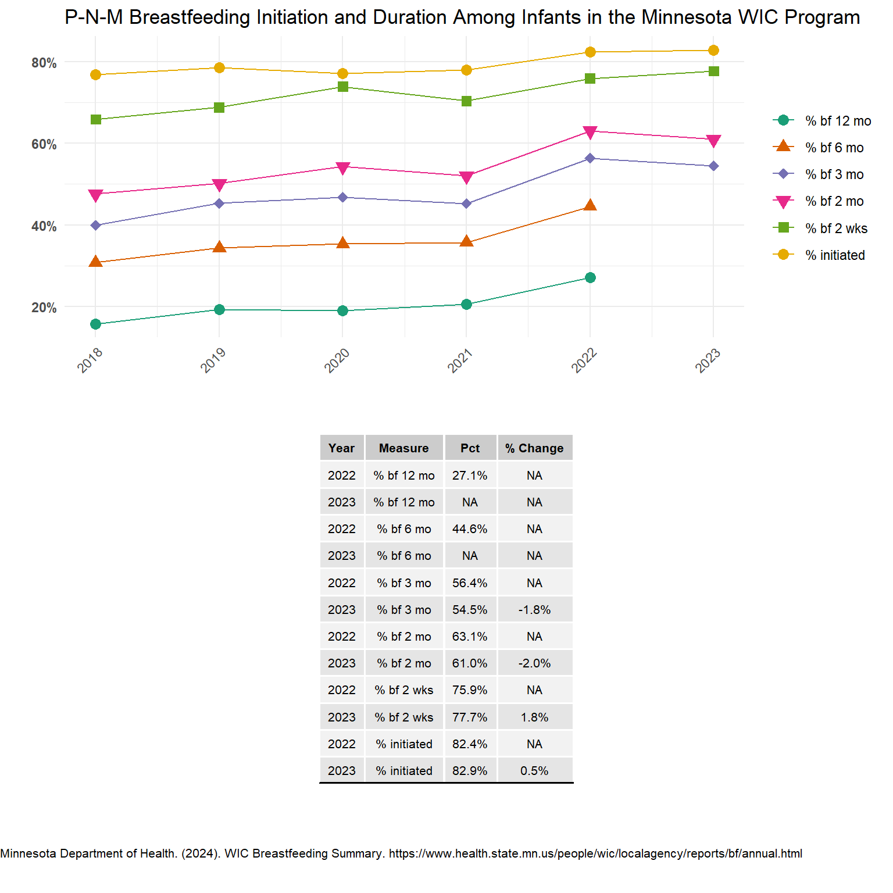
Health Behaviors
Behavioral factors play a crucial role in determining the overall health and well-being of a community. These factors include habits and behaviors that can either positively or negatively impact health outcomes. In this section, we will explore several key behavioral factors that significantly affect our population:
Binge Drinking Among Adults: Excessive alcohol consumption can lead to a range of health issues, including liver disease, cardiovascular problems, and increased risk of accidents and injuries. Understanding the prevalence of binge drinking helps us address its impact on public health.
Percentage of Mothers Who Smoke: Smoking during pregnancy poses serious risks to both the mother and the unborn child, including low birth weight, preterm birth, and developmental issues. Monitoring smoking rates among mothers is essential for promoting healthier pregnancies and better outcomes for infants.
Current Cigarette Smoking Among Adults: Smoking remains a leading cause of preventable diseases and deaths. By examining current smoking rates, we can identify trends and target interventions to reduce smoking-related health problems.
STI/HIV: The prevalence of sexually transmitted infections (STIs) and HIV is a critical public health concern. Effective prevention, testing, and treatment strategies are necessary to control the spread of these infections and improve the health of affected individuals.
By analyzing these behavioral factors, we can gain valuable insights into the health challenges faced by our community and develop targeted strategies to promote healthier behaviors and improve overall health outcomes.
Breastfeeding
The Special Supplemental Nutrition Program for Women, Infants & Children (WIC) is a nutrition and breastfeeding program that helps eligible pregnant women, new mothers, babies and young children. WIC provides nutrition education and counseling, nutritious foods, and referrals to health and other social services. Polk-Norman-Mahnomen CHS participates in the Minnesota WIC Peer Breastfeeding Support Program. Peer counselors improve health by increasing breastfeeding initiation, exclusivity, and duration.
Substance Use and Misuse
While most youth enjoy good health, some are at increased risk for behaviors that can lead to poor health outcomes. Notably, many adults with substance abuse disorders and addictions began their struggles during adolescence and young adulthood.
Mahnomen County stands out with the highest rates of Neonatal Abstinence Syndrome (NAS) at 52.3 per 1,000 live births and nonfatal drug overdoses at 9.8 per 1,000 residents. These rates are significantly higher than the state averages for Minnesota.
Comparing fatal drug overdose data across counties can be challenging due to its presentation as raw counts rather than rates. Instead of focusing solely on these counts, we should consider the profound impact each loss has on the community. Over approximately nine years, Minnesota lost 8,991 individuals to drug overdoses. Polk County experienced 34 fatalities, Norman County had 4, and Mahnomen County lost 43. These numbers remind us that behind every statistic is a life, underscoring the importance of our work and the positive changes we strive to bring to our communities.
Beyond drug overdoses, other significant public health concerns include binge drinking and smoking. These behaviors also contribute to premature death and years of potential life lost. By examining data on binge drinking and smoking, we can better understand their impact on our communities and develop effective strategies to mitigate these risks.
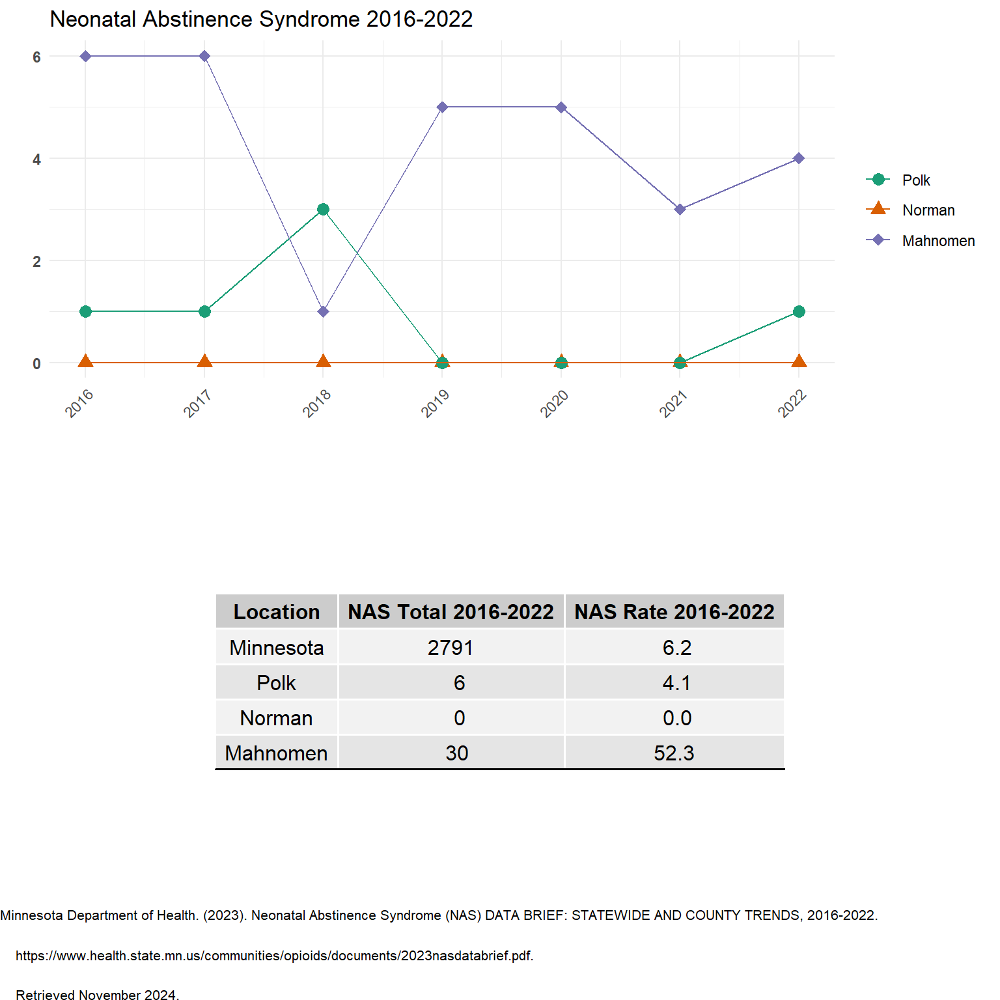
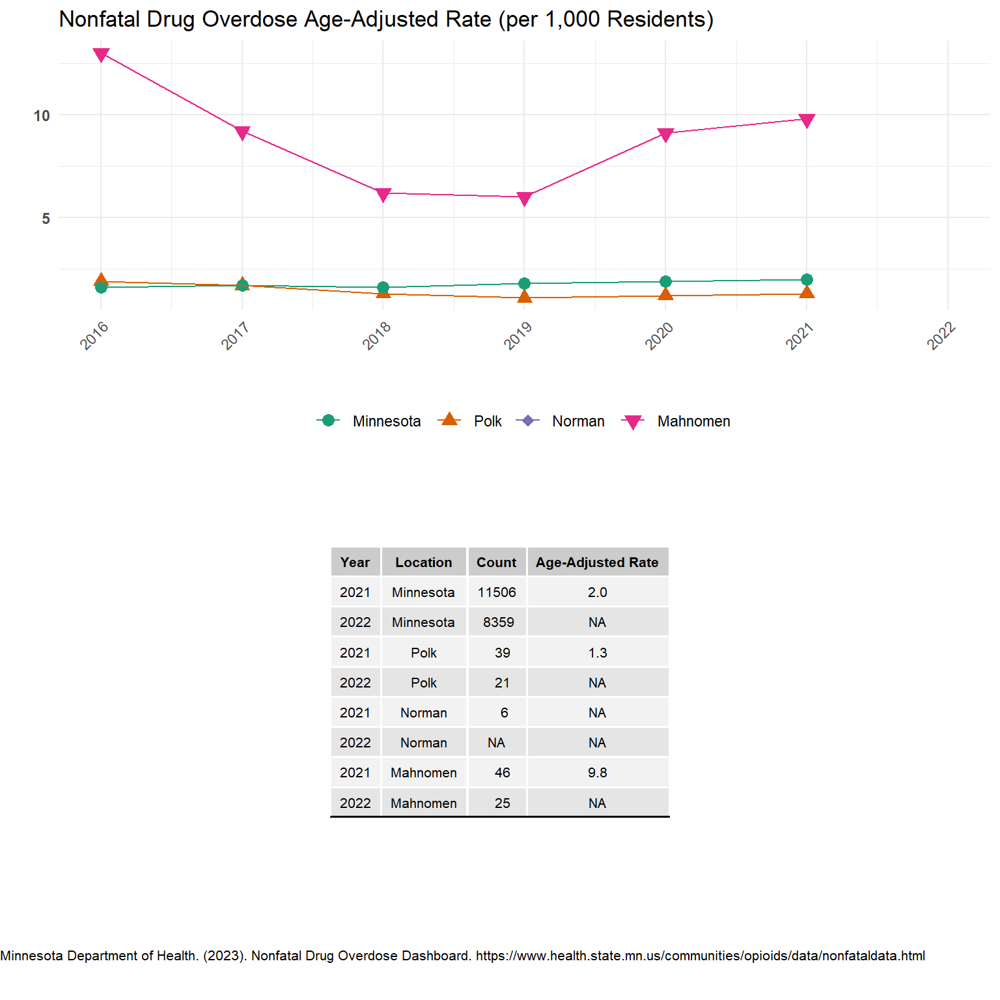
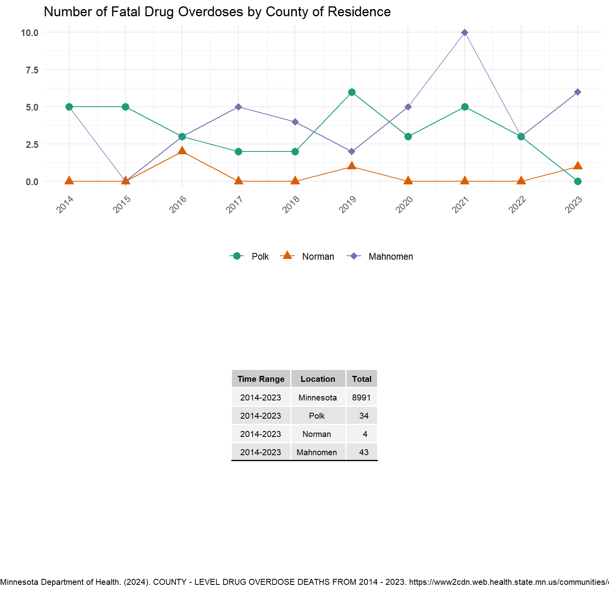
Polk-Norman-Mahnomen Environmental Scan
Between May and June of 2023, forty-two alcohol retailers were contacted to better understand what youth in our area are seeing about THC, and to provide information to county officials and legislators following cannabis legalization.
- All 42 establishments in the scan sold alcohol products (beer, wine, and/or hard liquor).
- 18 establishments were within 1000 feet of a school or park/playground.
- 36 advertised the sale of alcohol outside their establishment.
- 13 had exterior signage regarding minimum purchase age, while 35 had interior signage regarding purchase age. Only 5 had signage related to the health risks of drinking alcohol.
- Seven establishments were found to sell THC products (1 liquor store, 1 vape shop, 5 bars/bar and grills)
Successes
Relationship Building: Most retailers were welcoming and appreciative of the scan. Building and continuing relationships with alcohol and THC retailers will strengthen PNM prevention efforts. There was also a high interest in RBST, as a value add for the business and to increase positive engagement with public health and law enforcement.
Minimum Purchase Age
Most establishments had clear signage indicating only persons 21 years of age and older are allowed in the bar area and that they check identification. 80% of establishments had interior signage about minimum purchase age of alcohol.
Polk County Opioid Funding Prioritization Survey
The Polk County Opioid Funding Prioritization Survey gathered input from community members to guide the allocation of over $3 million from the national opioid settlement. The survey, conducted from June 12 to July 24, 2023, received 137 responses, with a majority prioritizing prevention, treatment, and recovery support. Key areas identified for funding include primary prevention, community development, and treatment expansion. The survey also highlighted the importance of harm reduction strategies such as overdose reversal and social detox. The results have shaped the county’s approach to addressing the opioid crisis over the next 18 years Polk County (2023). If you are reading this on the computer and need more information, please click the following links for more information Polk-County-Opioid-Funding-Prioritization-Survey-Results Opioid Settlement Advisory Council. If you are reading this as a printed version please use the following url’s when you do have access to a computer.
Alcohol
Binge drinking is a public health concern that affects our communities and the state of Minnesota at similar rates. Approximately 1 in 5 individuals in Minnesota, including those in our three counties, engage in binge drinking. This widespread behavior poses various health risks, including alcohol poisoning, injuries, and long-term health issues such as liver disease, heart disease, and cancer. Binge drinking can also lead to risky behaviors, such as unsafe sexual practices and impaired driving, which further endanger individuals and communities.
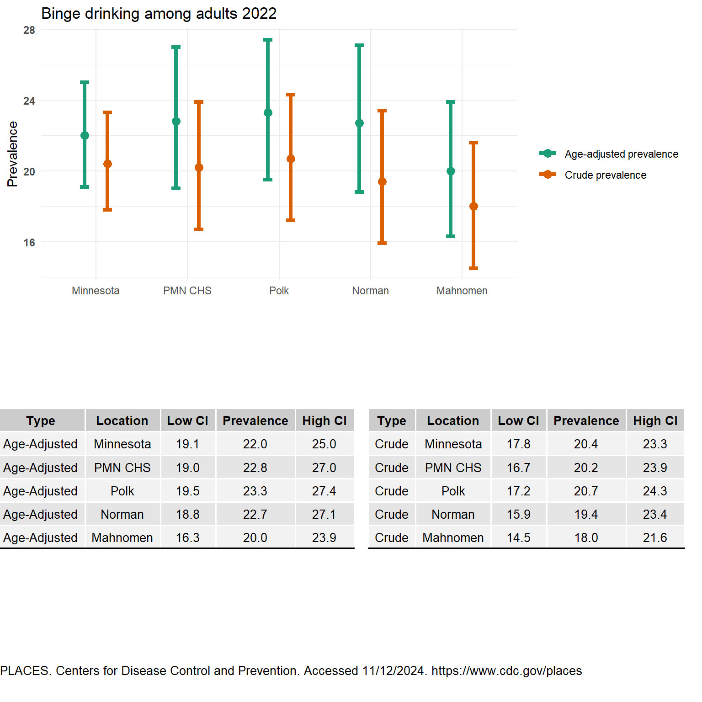
Smoking
Smoking remains a critical public health issue for local communities, impacting overall health and well-being. While Mahnomen County has historically had a higher percentage of mothers who smoked during pregnancy, it is encouraging to see a significant decline in this behavior from 2021 to 2022. Changing any habit is challenging, and maintaining these changes takes time, making this decrease particularly noteworthy.
However, it is important to note that Mahnomen County also has a significantly higher smoking rate among all adults compared to the other counties. This higher prevalence of smoking poses various health risks, including respiratory diseases, cardiovascular diseases, and cancer. Addressing smoking rates remains a critical public health priority to improve overall community health and reduce the burden of smoking-related illnesses.
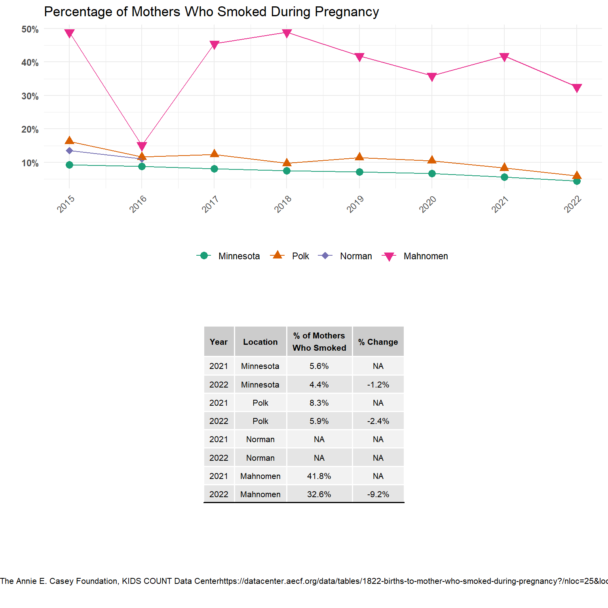
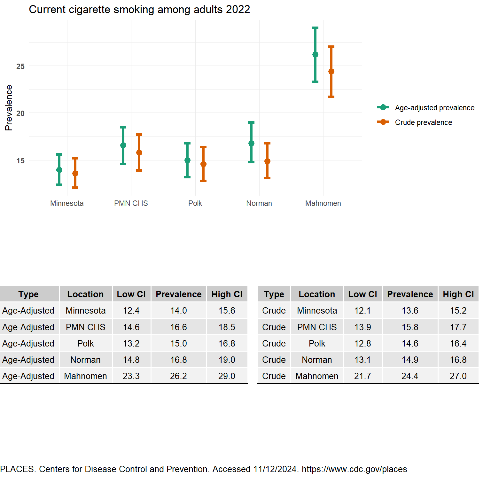
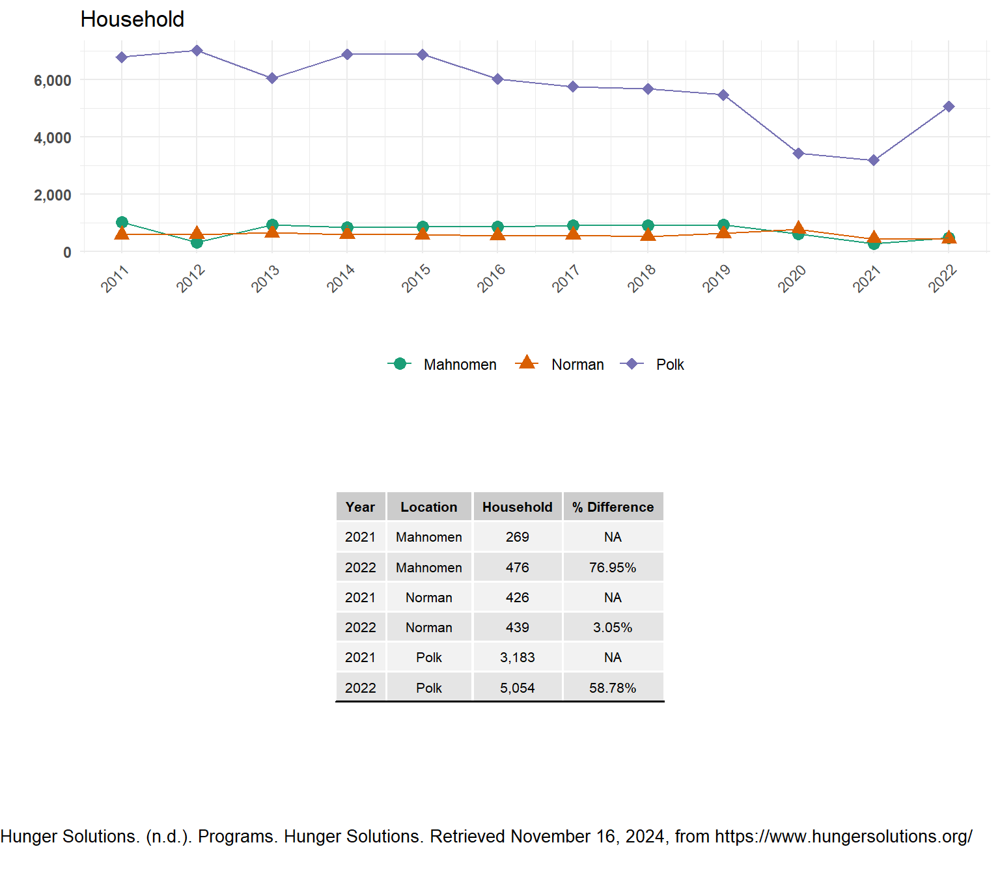

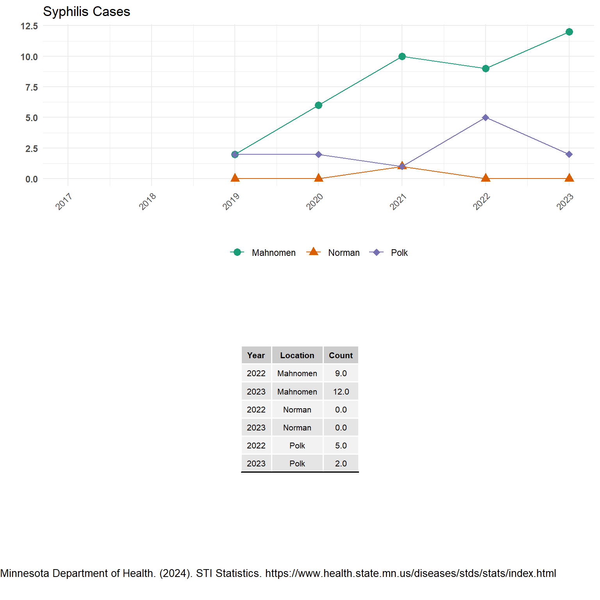
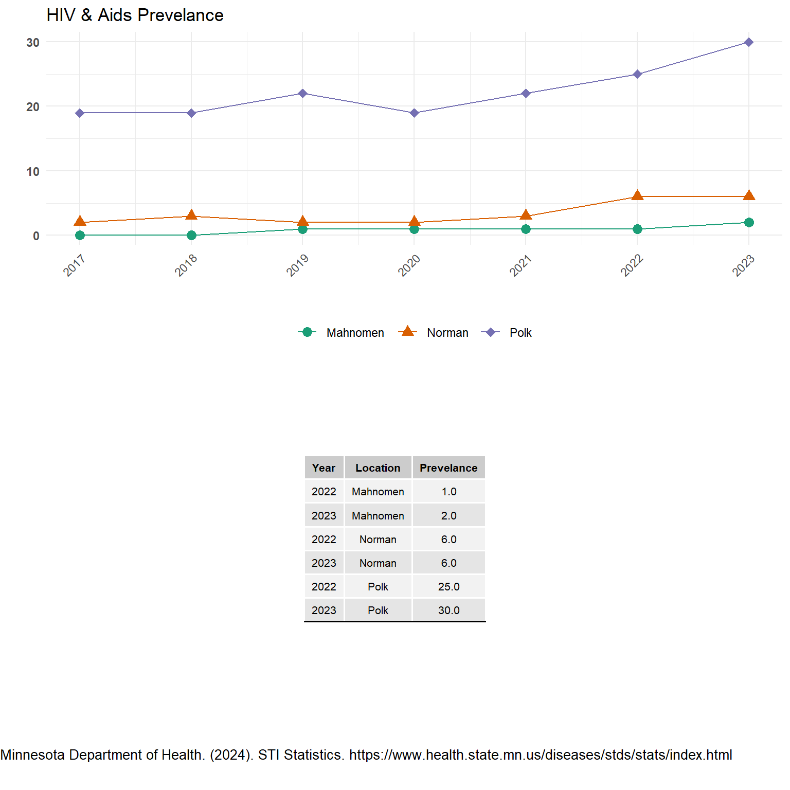
Food Shelf Household Visits
In 2022, food shelf visits in Polk, Norman, and Mahnomen counties reflected a need for food assistance.
Polk County: Households made numerous visits to food shelves, highlighting the ongoing struggle with food insecurity in the area.
Norman County: Similarly, there was a notable increase in food shelf visits, indicating that many families are facing economic challenges and require additional support.
Mahnomen County: The county experienced a high number of food shelf visits, underscoring the severe need for food assistance among its residents.
These trends align with the broader state data, which saw a record high of 5.5 million food shelf visits in Minnesota and was driven by rising food prices and increased demand from seniors, adults, and children Hunger Solutions (2022).
In 2022, food shelf visits in Polk, Norman, and Mahnomen counties reflected a need for food assistance.
Polk County: Households made numerous visits to food shelves, highlighting the ongoing struggle with food insecurity in the area.
Norman County: Similarly, there was a notable increase in food shelf visits, indicating that many families are facing economic challenges and require additional support.
Mahnomen County: The county experienced a high number of food shelf visits, underscoring the severe need for food assistance among its residents.
These trends align with the broader state data, which saw a record high of 5.5 million food shelf visits in Minnesota and was driven by rising food prices and increased demand from seniors, adults, and children Hunger Solutions (2022).
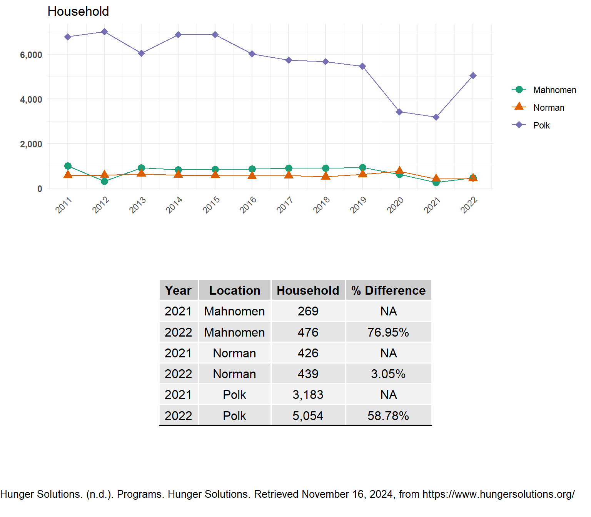
Farmer’s Markets
Farmers markets offer a variety of programs to make fresh, local produce more accessible to everyone in the community. Programs like Market Bucks, which match SNAP/EBT spending dollar-for-dollar up to $10, help stretch food budgets and encourage healthy eating. The WIC Farmers Market Nutrition Program provides additional support for women, infants, and children, ensuring they have access to nutritious foods.
Local initiatives, such as the Power of Produce (PoP) program, offer incentives for children and seniors to engage with farmers markets, promoting lifelong healthy eating habits. These programs not only support individual health but also strengthen community ties and local economies.